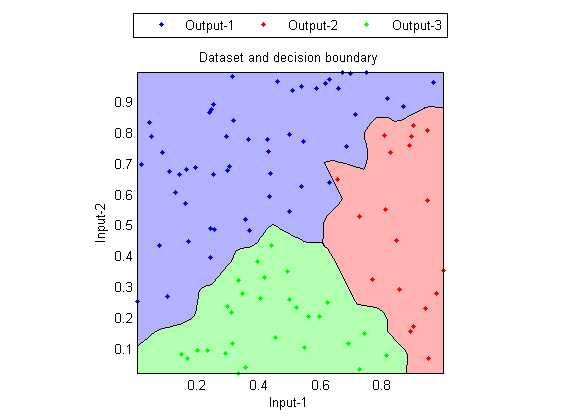
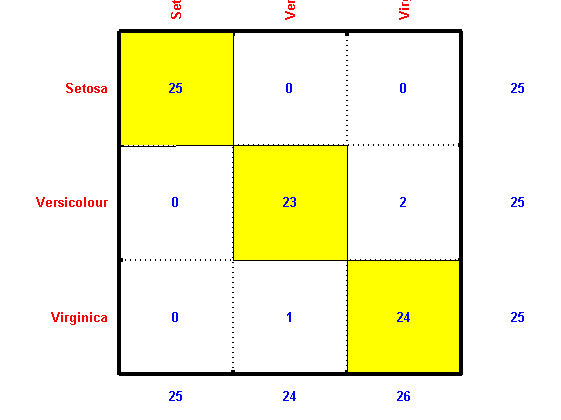
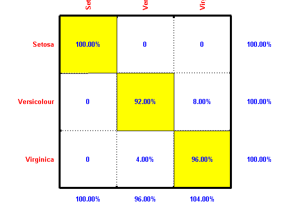
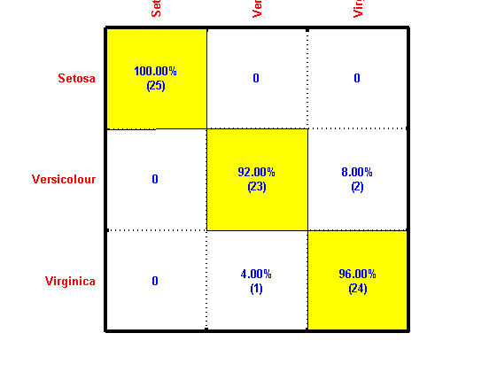
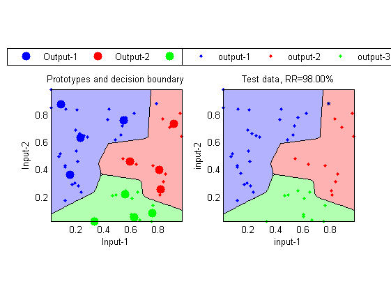
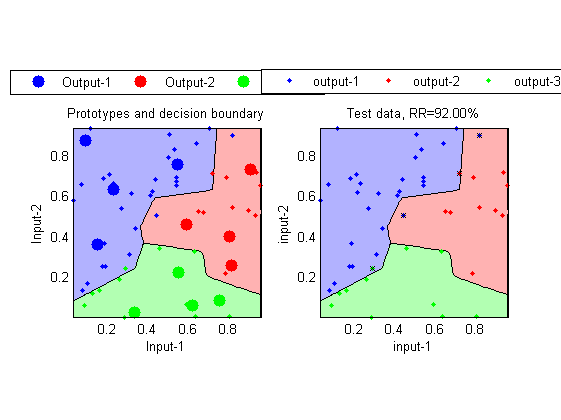

K-Nearest-Neighbor Classifier (KNNC)
The k-nearest-neighbor classifier (KNNC for short) is one of the most basic classifiers for pattern recognition or data classification. The principle of this method is based on the intuitive concept that data instances of the same class should be closer in the feature space. As a result, for a given data point x of unknown class, we can simply compute the distance between x and all the data points in the training data, and assign the class determined by the K nearest points of x. Due to its simplicity, KNNC is often used as a baseline method in comparison with other sophisticated approaches in pattern recognition.
Contents
A Basic example
In the next example, we shall apply KNNC with K=1 for the IRIS dataset, where odd and even indexed entries are used as training and test data, respectively.
[trainSet, testSet]=prData('iris'); trainSet.k=1; cOutputDs=knncEval(trainSet, trainSet); rrDs=sum(trainSet.output==cOutputDs)/length(trainSet.output); fprintf('Inside-test recog. rate = %g%%\n', rrDs*100); cOutputTs=knncEval(testSet, trainSet); rrTs=sum(testSet.output==cOutputTs)/length(testSet.output); fprintf('Outside-test recog. rate = %g%%\n', rrTs*100);
Inside-test recog. rate = 100% Outside-test recog. rate = 96%
It should be noted that if the design set (or training set) is used as the parameters of KNNC, the inside-test recognition rate is always 100%, which is overly optimistic.
Decision boundary
In the 2-dimensional space, the decision boundaries formed by KNNC with k = 1 can be derived from the Voronoi diagram. The following example demonstrates the decision boundary formed by 1NNC:
DS=prData('3classes'); knncPlot(DS, [], 'decBoundary');
Distance function
We can also plot the posterior-likely function to each class for a given input domain:
DS=prData('3classes'); knncPrm=knncTrain(DS); knncPrm.k=1; knncPlot(DS, knncPrm, '2dPosterior');

Confusion matrix
In the first example, we have computed the recognition rate to be 96% without breakdown performance of each class. If we want to know the performance of each class, we can use the confusion matrix to display the result, as shown in the next example.
[trainSet, testSet]=prData('iris'); trainNum=size(trainSet.input, 2); testNum =size(testSet.input, 2); trainSet.k=1; predictedOutput=knncEval(testSet, trainSet); confMat=confMatGet(testSet.output, predictedOutput); opt=confMatPlot('defaultOpt'); opt.className=trainSet.outputName; opt.mode='dataCount'; figure; confMatPlot(confMat, opt); opt.mode='percentage'; figure; confMatPlot(confMat, opt); opt.mode='both'; figure; confMatPlot(confMat, opt);  
In the above example, the first plot is the confusion matrix C where C(i, j) is the number of data in class i being classified as class j. The second plot is the corresponding recognition rates for each class. And the third plot is a combination of both data counts and percentages. From the plots of the confusion matrix, the recognition rates for classes 1, 2, and 3 are 100%, 96%, and 92%, respectively, with an overall recognition rate of 96%. Moreover, from the confusion matrix, we know that classes 2 and 3 are more likely to be confused since there are only 3 cases of misclassification, one is 2 => 3, the other 3 => 2. (Here we use "i => j" to indicate an entry in class i being classified as class j.)
Training of KNNC
It is possible to reduce the size of the training data for KNNC. One simple way to achieve such modeling task (that is, use of less data to represent the original training set) is by k-means clustering. This has been built into the function knncTrain.m, which can be invoked as follows:
[trainSet, testSet]=prData('3classes'); knncTrainPrm.method='kMeans'; knncTrainPrm.centerNum4eachClass=4; knncPrm=knncTrain(trainSet, knncTrainPrm); knncPrm.k=1; cOutputDs=knncEval(trainSet, knncPrm); rrDs=sum(trainSet.output==cOutputDs)/length(trainSet.output); fprintf('Inside-test recog. rate = %g%%\n', rrDs*100); cOutputTs=knncEval(testSet, knncPrm); rrTs=sum(testSet.output==cOutputTs)/length(testSet.output); fprintf('Outside-test recog. rate = %g%%\n', rrTs*100);
Inside-test recog. rate = 98% Outside-test recog. rate = 92%
We can plot the decision boundary of the KNNC, along with the training set:
trainSet.hitIndex=find(cOutputDs==trainSet.output);
figure; knncPlot(trainSet, knncPrm, 'decBoundary');
 Similarly, we can plot the decision boundary of the KNNC along with the test set:
testSet.hitIndex=find(cOutputTs==testSet.output);
figure; knncPlot(testSet, knncPrm, 'decBoundary');
 Copyright 2011-2012 Jyh-Shing Roger Jang.